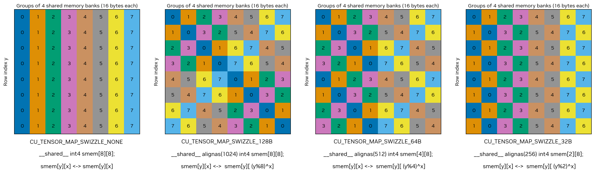

섹션 3.2.5를 기반으로, 이 섹션에서는 GPU 메모리 계층 내에서의 비동기 데이터 이동에 대한 상세한 지침과 예제를 제공합니다. 요소 단위 복사를 위한 LDGSTS, 벌크(1차원 및 다차원) 전송을 위한 텐서 메모리 가속기(TMA), 레지스터에서 분산 공유 메모리로의 복사를 위한 STAS를 다루며, 이러한 메커니즘이 비동기 배리어 및 파이프라인과 어떻게 통합되는지 보여줍니다.
4.11.1. LDGSTS 사용#
많은 CUDA 애플리케이션은 글로벌 메모리와 공유 메모리 간의 빈번한 데이터 이동을 요구합니다. 종종 이는 더 작은 데이터 요소를 복사하거나 불규칙한 메모리 접근 패턴을 수행하는 것을 포함합니다. LDGSTS(CC 8.0+, PTX 문서 참조)의 주요 목표는 더 작은 요소 단위 데이터 전송에 대해 글로벌 메모리에서 공유 메모리로의 효율적인 비동기 데이터 전송 메커니즘을 제공하는 동시에, 실행 오버랩을 통해 컴퓨트 리소스를 더 잘 활용할 수 있도록 하는 것입니다.
차원. LDGSTS는 4, 8 또는 16바이트 복사를 지원합니다. 4 또는 8바이트를 복사하는 경우는 항상 이른바 L1 ACCESS 모드에서 발생하며, 이 경우 데이터는 L1에도 캐시됩니다. 반면 16바이트 복사는 L1 BYPASS 모드를 활성화하여, 이 경우 L1이 오염되지 않습니다.
소스와 목적지. LDGSTS를 사용하는 비동기 복사 연산에서 지원되는 유일한 방향은 글로벌 메모리에서 공유 메모리로입니다. 포인터는 복사되는 데이터 크기에 따라 4, 8 또는 16바이트 정렬이 필요합니다. 최상의 성능은 공유 메모리와 글로벌 메모리 모두의 정렬이 128바이트일 때 달성됩니다.
비동기성. LDGSTS를 사용하는 데이터 전송은 비동기이며, 비동기 스레드 연산으로 모델링됩니다( Async Thread and Async Proxy 참조). 이를 통해 시작 스레드는 하드웨어가 비동기적으로 데이터를 복사하는 동안 계산을 계속할 수 있습니다. 데이터 전송이 실제로 비동기로 발생하는지는 하드웨어 구현에 따라 달라지며, 향후 변경될 수 있습니다.
LDGSTS는 연산이 완료되었을 때 신호를 제공해야 합니다. LDGSTS는 완료 신호를 제공하는 메커니즘으로 공유 메모리 배리어 또는 파이프라인을 사용할 수 있습니다. 기본적으로 각 스레드는 자신의 LDGSTS 복사만 기다립니다. 따라서 LDGSTS를 사용해 다른 스레드와 공유될 일부 데이터를 프리페치(prefetch)한다면, LDGSTS 완료 메커니즘과 동기화한 뒤 __syncthreads()이(가) 필요합니다.
방향 |
비동기 복사(LDGSTS, CC 8.0+) |
||
|---|---|---|---|
소스 |
목적지 |
완료 메커니즘 |
API |
global |
global |
||
shared::cta |
global |
||
global |
shared::cta |
공유 메모리 배리어, 파이프라인 |
cuda::memcpy_async, cooperative_groups::memcpy_async, __pipeline_memcpy_async |
global |
shared::cluster |
||
shared::cluster |
shared::cta |
||
shared::cta |
shared::cta |
||
다음 섹션에서는 예제를 통해 LDGSTS를 사용하는 방법을 보여주고, 서로 다른 API 간의 차이점을 설명합니다.
4.11.1.1. 조건부 코드에서 로드 배치 처리#
이 스텐실 예제에서는 스레드 블록의 첫 번째 워프가 중앙뿐 아니라 좌우 헤일로에서 필요한 모든 데이터를 집합적으로 로드하는 역할을 담당합니다. 동기 복사를 사용할 경우, 코드의 조건부 특성 때문에 컴파일러는 3개의 LDG 뒤에 3개의 STS가 이어지는(글로벌 메모리 지연 시간을 숨기기 위해 데이터를 로드하는 최적의 방식) 형태 대신, 글로벌에서 로드(LDG)하고 공유 메모리에 저장(STS)하는 명령 시퀀스를 생성하도록 선택할 수 있습니다.
__global__ void stencil_kernel(const float *left, const float *center, const float *right)
{
// Left halo (8 elements) - center (32 elements) - right halo (8 elements)
__shared__ float buffer[8 + 32 + 8];
const int tid = threadIdx.x;
if (tid < 8) {
buffer[tid] = left[tid]; // Left halo
} else if (tid >= 32 - 8) {
buffer[tid + 16] = right[tid]; // Right halo
}
if (tid < 32) {
buffer[tid + 8] = center[tid]; // Center
}
__syncthreads();
// Compute stencil
}
데이터가 최적의 방식으로 로드되도록 보장하기 위해, 동기 메모리 복사를 글로벌 메모리에서 공유 메모리로 직접 데이터를 로드하는 비동기 복사로 대체할 수 있습니다. 이렇게 하면 데이터를 공유 메모리로 직접 복사하여 레지스터 사용량을 줄일 뿐만 아니라, 글로벌 메모리에서의 모든 로드가 인플라이트(in-flight) 상태가 되도록 보장합니다.
#include <cooperative_groups.h>
#include <cuda/barrier>
__global__ void stencil_kernel(const float *left, const float *center, const float *right)
{
auto block = cooperative_groups::this_thread_block();
auto thread = cooperative_groups::this_thread();
using barrier_t = cuda::barrier<cuda::thread_scope_block>;
__shared__ barrier_t barrier;
__shared__ float buffer[8 + 32 + 8];
// Initialize synchronization object.
if (block.thread_rank() == 0) {
init(&barrier, block.size());
}
__syncthreads();
// Version 1: Issue the copies in individual threads.
if (tid < 8) {
cuda::memcpy_async(buffer + tid, left + tid, cuda::aligned_size_t<4>(sizeof(float)), barrier); // Left halo
// or cuda::memcpy_async(thread, buffer + tid, left + tid, cuda::aligned_size_t<4>(sizeof(float)), barrier);
} else if (tid >= 32 - 8) {
cuda::memcpy_async(buffer + tid + 16, right + tid, cuda::aligned_size_t<4>(sizeof(float)), barrier); // Right halo
// or cuda::memcpy_async(thread, buffer + tid + 16, right + tid, cuda::aligned_size_t<4>(sizeof(float)), barrier);
}
if (tid < 32) {
cuda::memcpy_async(buffer + 40, right + tid, cuda::aligned_size_t<4>(sizeof(float)), barrier); // Center
// or cuda::memcpy_async(thread, buffer + 40, right + tid, cuda::aligned_size_t<4>(sizeof(float)), barrier);
}
// Version 2: Cooperatively issue the copies across all threads.
cuda::memcpy_async(block, buffer, left, cuda::aligned_size_t<4>(8 * sizeof(float)), barrier); // Left halo
cuda::memcpy_async(block, buffer + 8, center, cuda::aligned_size_t<4>(32 * sizeof(float)), barrier); // Center
cuda::memcpy_async(block, buffer + 40, right, cuda::aligned_size_t<4>(8 * sizeof(float)), barrier); // Right halo
// Wait for all copies to complete.
barrier.arrive_and_wait();
__syncthreads();
// Compute stencil
}
#include <cooperative_groups.h>
#include <cooperative_groups/memcpy_async.h>
namespace cg = cooperative_groups;
__global__ void stencil_kernel(const float *left, const float *center, const float *right)
{
cg::thread_block block = cg::this_thread_block();
// Left halo (8 elements) - center (32 elements) - right halo (8 elements).
__shared__ float buffer[8 + 32 + 8];
// Cooperatively issue the copies across all threads.
cg::memcpy_async(block, buffer, left, 8 * sizeof(float)); // Left halo
cg::memcpy_async(block, buffer + 8, center, 32 * sizeof(float)); // Center
cg::memcpy_async(block, buffer + 40, right, 8 * sizeof(float)); // Right halo
cg::wait(block); // Waits for all copies to complete.
__syncthreads();
// Compute stencil.
}
#include <cuda_pipeline.h>
__global__ void stencil_kernel(const float *left, const float *center, const float *right)
{
// Left halo (8 elements) - center (32 elements) - right halo (8 elements).
__shared__ float buffer[8 + 32 + 8];
const int tid = threadIdx.x;
if (tid < 8) {
__pipeline_memcpy_async(buffer + tid, left + tid, sizeof(float)); // Left halo
} else if (tid >= 32 - 8) {
__pipeline_memcpy_async(buffer + tid + 16, right + tid, sizeof(float)); // Right halo
}
if (tid < 32) {
__pipeline_memcpy_async(buffer + tid + 8, center + tid, sizeof(float)); // Center
}
__pipeline_commit();
__pipeline_wait_prior(0);
__syncthreads();
// Compute stencil.
}
그 cuda::memcpy_async 에 대한 오버로드 cuda::barrier 는 an을 사용하여 비동기 데이터 전송을 동기화할 수 있게 합니다 비동기 배리어. 이 오버로드는 생성 시 현재 페이즈의 기대 카운트를 증가시키고, 복사 연산 완료 시 이를 감소시켜 배리어에 바인딩된 다른 스레드가 수행한 것처럼 복사 연산을 실행하며, 그 결과 해당 페이즈가 barrier 는 배리어에 참여하는 모든 스레드가 도착(arrive)했으며, 또한 모든 memcpy_async 배리어의 현재 페이즈에 바인딩된 모든 연산이 완료되었을 때만 진행됩니다. 우리는 블록 전체 범위의 barrier, 여기서는 블록 내 모든 스레드가 참여하며, 배리어에서의 도착(arrive)과 대기(wait)를 다음과 병합합니다. arrive_and_wait, 페이즈들 사이에서 어떤 작업도 수행하지 않기 때문입니다.
동일한 결과를 얻기 위해 스레드 수준 복사(버전 1) 또는 집합적 복사(버전 2) 중 하나를 사용할 수 있다는 점에 유의하세요. 버전 2에서는 API가 내부적으로 복사가 어떻게 수행되는지를 자동으로 처리합니다. 두 버전 모두에서 우리는 cuda::aligned_size_t<4>() LDGSTS를 사용할 수 있도록, 데이터가 4바이트 정렬되어 있고 복사할 데이터의 크기가 4의 배수임을 컴파일러에 알리기 위해. 상호운용성을 위해 cuda::barrier, cuda::memcpy_async 로부터 cuda/barrier 여기서는 header가 사용됩니다.
cooperative_groups::memcpy_async 구현은 블록 내 모든 스레드 전반에 걸쳐 메모리 전송을 집합적으로 조정하지만, 명시적 배리어 연산 대신 cg::wait(block)로 완료를 동기화합니다.
로우 레벨 프리미티브를 기반으로 한 구현은 __pipeline_memcpy_async()를 사용해 요소 단위 메모리 전송을 시작하고, __pipeline_commit()를 사용해 복사 배치를 커밋하며, __pipeline_wait_prior(0)를 사용해 파이프라인 내 모든 연산이 완료될 때까지 대기합니다. 이는 상위 수준 API에 비해 코드가 더 장황해지는 대가로 가장 직접적인 제어를 제공합니다. 또한 내부적으로 LDGSTS가 사용되도록 보장하는데, 이는 상위 수준 API에서는 보장되지 않습니다.
참고
이 예제에서 cooperative_groups::memcpy_async API는 다른 API들보다 효율이 떨어지는데, 실행 시 각 복사 연산을 즉시 자동으로 커밋하여, 다른 API들이 가능하게 하는 단일 커밋 연산 전에 여러 복사를 배치로 묶어 최적화하는 것을 방해하기 때문입니다.
4.11.1.2. 데이터 프리페치(prefetch)#
이 예제에서는 비동기 데이터 복사를 사용하여 글로벌 메모리에서 공유 메모리로 데이터를 프리페치하는 방법을 보여줍니다. 반복적인 복사 및 계산 패턴에서, 이는 현재 반복에서의 계산으로 향후 반복의 데이터 전송 지연 시간을 숨길 수 있게 하며, 잠재적으로 bytes-in-flight를 증가시킬 수 있습니다.
#include <cooperative_groups.h>
#include <cuda/pipeline>
template <size_t num_stages = 2 /* Pipeline with num_stages stages */>
__global__ void prefetch_kernel(int* global_out, int const* global_in, size_t size, size_t batch_size) {
auto grid = cooperative_groups::this_grid();
auto block = cooperative_groups::this_thread_block();
auto thread = cooperative_groups::this_thread();
assert(size == batch_size * grid.size()); // Assume input size fits batch_size * grid_size
extern __shared__ int shared[]; // num_stages * block.size() * sizeof(int) bytes
size_t shared_offset[num_stages];
for (int s = 0; s < num_stages; ++s) shared_offset[s] = s * block.size();
cuda::pipeline<cuda::thread_scope_thread> pipeline = cuda::make_pipeline();
auto block_batch = [&](size_t batch) -> int {
return block.group_index().x * block.size() + grid.size() * batch;
};
// Fill the pipeline with the first ``num_stages`` batches.
for (int s = 0; s < num_stages; ++s) {
pipeline.producer_acquire();
cuda::memcpy_async(shared + shared_offset[s] + tid, global_in + block_batch(s) + tid, cuda::aligned_size_t<4>(sizeof(int)), pipeline);
pipeline.producer_commit();
}
int stage = 0;
// compute_batch: next batch to process
// fetch_batch: next batch to fetch from global memory
for (size_t compute_batch = 0, fetch_batch = num_stages; compute_batch < batch_size; ++compute_batch, ++fetch_batch) {
// Wait for the first requested stage to complete.
constexpr size_t pending_batches = num_stages - 1;
cuda::pipeline_consumer_wait_prior<pending_batches>(pipeline);
__syncthreads(); // Not required if each thread works on the data it copied.
// Compute on the current batch
compute(global_out + block_batch(compute_batch) + tid, shared + shared_offset[stage] + tid);
// Release the current stage.
pipeline.consumer_release();
__syncthreads(); // Not required if each thread works on the data it copied.
// Load future stage ``num_stages`` ahead of current compute batch.
pipeline.producer_acquire();
if (fetch_batch < batch_size) {
cuda::memcpy_async(shared + shared_offset[stage] + tid, global_in + block_batch(fetch_batch) + tid, cuda::aligned_size_t<4>(sizeof(int)), pipeline);
}
pipeline.producer_commit();
stage = (stage + 1) % num_stages;
}
}
#include <cooperative_groups.h>
#include <cooperative_groups/memcpy_async.h>
namespace cg = cooperative_groups;
template <size_t num_stages = 2 /* Pipeline with num_stages stages */>
__global__ void prefetch_kernel(int* global_out, int const* global_in, size_t size, size_t batch_size) {
auto grid = cooperative_groups::this_grid();
auto block = cooperative_groups::this_thread_block();
assert(size == batch_size * grid.size()); // Assume input size fits batch_size * grid_size
extern __shared__ int shared[]; // num_stages * block.size() * sizeof(int) bytes
size_t shared_offset[num_stages];
for (int s = 0; s < num_stages; ++s) shared_offset[s] = s * block.size();
cuda::pipeline<cuda::thread_scope_thread> pipeline = cuda::make_pipeline();
auto block_batch = [&](size_t batch) -> int {
return block.group_index().x * block.size() + grid.size() * batch;
};
// Fill the pipeline with the first ``num_stages`` batches.
for (int s = 0; s < num_stages; ++s) {
size_t block_batch_idx = block_batch(s);
cg::memcpy_async(block, shared + shared_offset[s], global_in + block_batch_idx, cuda::aligned_size_t<4>(sizeof(int));
}
int stage = 0;
// compute_batch: next batch to process
// fetch_batch: next batch to fetch from global memory
for (size_t compute_batch = 0, fetch_batch = num_stages; compute_batch < batch_size; ++compute_batch, ++fetch_batch) {
// Wait for the first requested stage to complete.
size_t pending_batches = (fetch_batch < batch_size - num_stages) ? num_stages - 1 : batch_size - fetch_batch - 1;
cg::wait_prior(pending_batches);
__syncthreads(); // Not required if each thread works on the data it copied.
// Compute on the current batch.
compute(global_out + block_batch(compute_batch) + tid, shared + shared_offset[stage] + tid);
__syncthreads(); // Not required if each thread works on the data it copied.
// Load future stage ``num_stages`` ahead of current compute batch.
size_t fetch_batch_idx = block_batch(fetch_batch);
if (fetch_batch < batch_size) {
cg::memcpy_async(block, shared + shared_offset[stage], global_in + block_batch(fetch_batch), cuda::aligned_size_t<4>(sizeof(int)) * block.size());
}
stage = (stage + 1) % num_stages;
}
}
#include <cooperative_groups.h>
#include <cuda_awbarrier_primitives.h>
template <size_t num_stages = 2 /* Pipeline with num_stages stages */>
__global__ void prefetch_kernel(int* global_out, int const* global_in, size_t size, size_t batch_size) {
auto grid = cooperative_groups::this_grid();
auto block = cooperative_groups::this_thread_block();
assert(size == batch_size * grid.size()); // Assume input size fits batch_size * grid_size
extern __shared__ int shared[]; // num_stages * block.size() * sizeof(int) bytes
size_t shared_offset[num_stages];
for (int s = 0; s < num_stages; ++s) shared_offset[s] = s * block.size();
auto block_batch = [&](size_t batch) -> int {
return block.group_index().x * block.size() + grid.size() * batch;
};
// Fill the pipeline with the first ``num_stages`` batches.
for (int s = 0; s < num_stages; ++s) {
__pipeline_memcpy_async(shared + shared_offset[s] + tid, global_in + block_batch(s)+ tid, cuda::aligned_size_t<4>(sizeof(int)));
__pipeline_commit();
}
// compute_batch: next batch to process
// fetch_batch: next batch to fetch from global memory
for (size_t compute_batch = 0, fetch_batch = num_stages; compute_batch < batch_size; ++compute_batch, ++fetch_batch) {
// Wait for the first requested stage to complete.
constexpr size_t pending_batches = num_stages - 1;
__pipeline_wait_prior<pending_batches>();
__syncthreads(); // Not required if each thread works on the data it copied.
// Compute on the current batch.
compute(global_out + block_batch(compute_batch) + tid, shared + shared_offset[stage] + tid);
__syncthreads(); // Not required if each thread works on the data it copied.
// Load future stage ``num_stages`` ahead of current compute batch.
if (fetch_batch < batch_size) {
__pipeline_memcpy_async(shared + shared_offset[stage] + tid, global_in + block_batch(fetch_batch) + tid, cuda::aligned_size_t<4>(sizeof(int)));
}
__pipeline_commit();
stage = (stage + 1) % num_stages;
}
}
그 cuda::memcpy_async 구현은 다음을 사용한 다단계 데이터 프리페치(prefetch)를 보여줍니다 cuda::pipeline (참조 파이프라인)와 함께 cuda::memcpy_async. 이는:
스레드에 로컬인 파이프라인을 초기화합니다.
스케줄링하여 파이프라인을 시작합니다
num_stagesmemcpy_async연산.모든 배치에 대해 루프를 수행합니다. 현재 배치의 완료 시점까지 모든 스레드를 블록한 다음, 현재 배치에 대해 연산을 수행하고, 마지막으로 다음을 스케줄합니다.
memcpy_async있다면.
그 cooperative_groups::memcpy_async 구현은 cooperative_groups::memcpy_async를 사용한 다단계 데이터 프리페치(prefetch)를 보여줍니다. 이전 구현과의 주요 차이점은 파이프라인 object를 사용하지 않고, 대신 내부적으로 cooperative_groups::memcpy_async에 의존하여 단계적으로 메모리 전송을 스케줄한다는 점입니다.
CUDA C 프리미티브 구현은 첫 번째와 상당히 유사한 방식으로 로우 레벨 프리미티브를 사용한 다단계 데이터 프리페치(prefetch)를 보여줍니다.
이 예제에서 효율적인 코드 생성을 가능하게 하는 중요한 세부 사항은 더 이상 가져올 배치가 없더라도 파이프라인에 num_stages 배치를 유지하는 것입니다. 이는 더 이상 가져올 배치가 없더라도(pipeline.producer_commit() 또는 __pipeline_commit()) 파이프라인에 커밋함으로써 수행됩니다. cooperative groups API에서는 내부 파이프라인에 접근할 수 없으므로 이는 가능하지 않다는 점에 유의하세요.
4.11.1.3. 워프 특수화를 통한 생산자-소비자 패턴#
이 예제에서는 단일 워프를 생산자로 특수화하여 글로벌 메모리에서 공유 메모리로의 비동기 데이터 복사를 수행하고, 나머지 워프는 공유 메모리에서 데이터를 소비하여 연산을 수행하는 생산자-소비자 패턴을 구현하는 방법을 보여줍니다. 생산자 스레드와 소비자 스레드 간의 동시성을 가능하게 하기 위해 공유 메모리에서 더블 버퍼링을 사용합니다. 소비자 워프가 한 버퍼의 데이터를 처리하는 동안, 생산자 워프는 다른 버퍼로 다음 데이터 배치를 비동기로 가져옵니다.
#include <cooperative_groups.h>
#include <cuda/pipeline>
#pragma nv_diag_suppress static_var_with_dynamic_init
using pipeline = cuda::pipeline<cuda::thread_scope_block>;
__device__ void produce(pipeline &pipe, int num_stages, int stage, int num_batches, int batch, float *buffer, int buffer_len, float *in, int N)
{
if (batch < num_batches)
{
pipe.producer_acquire();
/* copy data from in(batch) to buffer(stage) using asynchronous memory copies */
cuda::memcpy_async(buffer + stage * buffer_len + threadIdx.x, in + batch * buffer_len + threadIdx.x, cuda::aligned_size_t<4>(sizeof(float)), pipe);
pipe.producer_commit();
}
}
__device__ void consume(pipeline &pipe, int num_stages, int stage, int num_batches, int batch, float *buffer, int buffer_len, float *out, int N)
{
pipe.consumer_wait();
/* consume buffer(stage) and update out(batch) */
pipe.consumer_release();
}
__global__ void producer_consumer_pattern(float *in, float *out, int N, int buffer_len)
{
auto block = cooperative_groups::this_thread_block();
constexpr int warpSize = 32;
/* Shared memory buffer declared below is of size 2 * buffer_len
so that we can alternatively work between two buffers.
buffer_0 = buffer and buffer_1 = buffer + buffer_len */
__shared__ extern float buffer[];
const int num_batches = N / buffer_len;
// Create a partitioned pipeline with 2 stages where the first warp is the producer and the other warps are consumers.
constexpr auto scope = cuda::thread_scope_block;
constexpr int num_stages = 2;
cuda::std::size_t producer_count = warpSize;
__shared__ cuda::pipeline_shared_state<scope, num_stages> shared_state;
pipeline pipe = cuda::make_pipeline(block, &shared_state, producer_count);
// Producer fills the pipeline
if (block.thread_rank() < producer_count)
for (int s = 0; s < num_stages; ++s)
produce(pipe, num_stages, s, num_batches, s, buffer, buffer_len, in, N);
// Process the batches
int stage = 0;
for (size_t b = 0; b < num_batches; ++b)
{
if (block.thread_rank() < producer_count)
{
// Producers prefetch the next batch
produce(pipe, num_stages, stage, num_batches, b + num_stages, buffer, buffer_len, in, N);
}
else
{
// Consumers consume the oldest batch
consume(pipe, num_stages, stage, num_batches, b, buffer, buffer_len, out, N);
}
stage = (stage + 1) % num_stages;
}
}
#include <cooperative_groups.h>
#include <cuda_awbarrier_primitives.h>
__device__ void produce(__mbarrier_t ready[], __mbarrier_t filled[], float *buffer, int buffer_len, float *in, int N)
{
for (int i = 0; i < N / buffer_len; ++i)
{
__mbarrier_token_t token = __mbarrier_arrive(&ready[i % 2]); /* wait for buffer_(i%2) to be ready to be filled */
while(!__mbarrier_try_wait(&ready[i % 2], token, 1000)) {}
/* produce, i.e., fill in, buffer_(i%2) */
__pipeline_memcpy_async(buffer + i * buffer_len + threadIdx.x, in + i * buffer_len + threadIdx.x, cuda::aligned_size_t<4>(sizeof(float)));
__pipeline_arrive_on(filled[i % 2]);
__mbarrier_arrive(filled[i % 2]); /* buffer_(i%2) is filled */
}
}
__device__ void consume(__mbarrier_t ready[], __mbarrier_t filled[], float *buffer, int buffer_len, float *out, int N)
{
__mbarrier_arrive(&ready[0]); /* buffer_0 is ready for initial fill */
__mbarrier_arrive(&ready[1]); /* buffer_1 is ready for initial fill */
for (int i = 0; i < N / buffer_len; ++i)
{
__mbarrier_token_t token = __mbarrier_arrive(&filled[i % 2]);
while(!__mbarrier_try_wait(&filled[i % 2], token, 1000)) {}
/* consume buffer_(i%2) */
__mbarrier_arrive(&ready[i % 2]); /* buffer_(i%2) is ready to be re-filled */
}
}
__global__ void producer_consumer_pattern(int N, float *in, float *out, int buffer_len)
{
/* Shared memory buffer declared below is of size 2 * buffer_len
so that we can alternatively work between two buffers.
buffer_0 = buffer and buffer_1 = buffer + buffer_len */
__shared__ extern float buffer[];
/* bar[0] and bar[1] track if buffers buffer_0 and buffer_1 are ready to be filled,
while bar[2] and bar[3] track if buffers buffer_0 and buffer_1 are filled-in respectively */
__shared__ __mbarrier_t bar[4];
// Initialize the barriers
auto block = cooperative_groups::this_thread_block();
if (block.thread_rank() < 4)
__mbarrier_init(bar + block.thread_rank(), block.size());
__syncthreads();
if (block.thread_rank() < warpSize)
produce(bar, bar + 2, buffer, buffer_len, in, N);
else
consume(bar, bar + 2, buffer, buffer_len, out, N);
}
cuda::memcpy_async 구현은 cuda::memcpy_async 및 2단계의 cuda::pipeline를 사용하여 가장 높은 수준의 추상화를 가진 API를 보여줍니다. 여기서는 분할된 파이프라인(참조: Pipelines)을 사용하며, 첫 번째 워프는 생산자 역할을 하고 나머지 워프는 소비자 역할을 합니다. 생산자는 처음에 파이프라인의 두 스테이지를 모두 채웁니다. 그런 다음 메인 처리 루프에서 소비자가 현재 배치를 처리하는 동안 생산자는 향후 배치를 위한 데이터를 가져와, 일정한 작업 흐름을 유지합니다.
프리미티브 기반의 CUDA C primitives 구현은 비동기 메모리 전송을 조율하기 위한 완료 메커니즘으로 __pipeline_memcpy_async()과 shared memory barriers를 결합합니다. __pipeline_arrive_on() 함수는 메모리 복사를 배리어와 연관시킵니다. 이 함수는 배리어 도착(arrival) 카운트를 1만큼 증가시키며, 그 앞에 순서화된 모든 비동기 연산이 완료되면 도착 카운트가 자동으로 1만큼 감소하므로 결과적으로 도착 카운트에 대한 순효과는 0입니다. 이러한 이유로, 또한 __mbarrier_arrive()로 배리어를 명시적으로 기다려야 합니다.
4.11.2. 텐서 메모리 가속기(TMA) 사용하기#
많은 애플리케이션은 글로벌 메모리로부터(또는 글로벌 메모리로) 대량의 데이터를 이동해야 합니다. 종종 데이터는 비연속적인 데이터 접근 패턴을 갖는 다차원 배열로 글로벌 메모리에 배치됩니다. 글로벌 메모리 접근을 줄이기 위해, 이러한 배열의 서브 타일을 연산에 사용하기 전에 공유 메모리로 복사합니다. 로드와 스토어에는 오류가 발생하기 쉽고 반복적인 주소 계산이 수반됩니다. 이러한 연산을 오프로딩하기 위해, compute capability 9.0(Hopper) 이상(참조: PTX documentation)에는 텐서 메모리 가속기(TMA)가 있습니다. TMA의 주요 목표는 다차원 배열에 대해 글로벌 메모리에서 공유 메모리로의 효율적인 데이터 전송 메커니즘을 제공하는 것입니다.
명명. 텐서 메모리 가속기(TMA)는 이 섹션에서 설명하는 기능을 지칭하는 데 사용되는 광범위한 용어입니다. 전방 호환성을 위해, 그리고 PTX ISA와의 불일치를 줄이기 위해, 이 섹션의 텍스트에서는 사용된 복사의 구체적 유형에 따라 TMA 연산을 벌크 비동기 복사 또는 벌크-텐서 비동기 복사로 지칭합니다. “bulk(벌크)”라는 용어는 이러한 연산을 이전 섹션에서 설명한 비동기 메모리 연산과 대비하기 위해 사용됩니다.
차원. TMA는 1차원 및 다차원(최대 5차원) 배열의 복사를 모두 지원합니다. 1차원 연속 배열의 벌크 비동기 복사를 위한 프로그래밍 모델은 다차원 배열의 벌크-텐서 비동기 복사를 위한 프로그래밍 모델과 다릅니다. 다차원 배열의 벌크-텐서 비동기 복사를 수행하려면, 하드웨어에는 tensor map이 필요합니다. 이 object는 글로벌 및 공유 메모리에서 다차원 배열의 레이아웃을 설명합니다. 텐서 맵은 일반적으로 호스트에서 cuTensorMapEncode API를 사용해 생성한 뒤, const 커널 파라미터로 호스트에서 디바이스로 전송되며, __grid_constant__로 애너테이션됩니다(참조: __grid_constant__ Parameters). 텐서 맵은 const 커널 파라미터로 호스트에서 디바이스로 전송되며, __grid_constant__로 애너테이션되고, 디바이스에서 공유 메모리와 글로벌 메모리 사이의 데이터 타일을 복사하는 데 사용할 수 있습니다. 반대로, 연속적인 1차원 배열의 벌크 비동기 복사를 수행할 때는 텐서 맵이 필요하지 않습니다. 포인터와 크기 파라미터로 디바이스에서 수행할 수 있습니다.
소스와 목적지. TMA 연산의 소스 및 목적지 주소는 공유 또는 글로벌 메모리에 있을 수 있습니다. 연산은 글로벌에서 공유 메모리로 데이터를 읽고, 공유에서 글로벌 메모리로 데이터를 쓰며, 또한 동일 클러스터 내 다른 블록의 distributed shared memory로 공유 메모리에서 복사할 수도 있습니다. 또한 클러스터 내에서는 벌크 비동기 텐서 연산을 multicast로 지정할 수 있습니다. 이 경우 글로벌 메모리에서 클러스터 내 여러 블록의 공유 메모리로 데이터를 전송할 수 있습니다. multicast 기능은 대상 아키텍처 sm_90a에 최적화되어 있으며, 다른 대상에서는 성능이 크게 저하될 수 있습니다. 따라서 compute architecture sm_90a에서 사용하도록 권장합니다.
비동기성. TMA를 사용하는 데이터 전송은 비동기이며, 비동기 프록시 연산으로 모델링됩니다(참조: Async Thread and Async Proxy). 이를 통해 시작 스레드는 하드웨어가 데이터를 비동기로 복사하는 동안 연산을 계속할 수 있습니다. 데이터 전송이 실제로 비동기로 발생하는지는 하드웨어 구현에 달려 있으며, 향후 변경될 수 있습니다. 벌크 비동기 연산이 완료되었음을 알리는 데 사용할 수 있는 여러 완료 메커니즘이 있습니다. 연산이 글로벌에서 공유 메모리로 읽을 때는, 블록 내 어떤 스레드든 shared memory barrier를 기다림으로써 공유 메모리에서 데이터가 읽기 가능해질 때까지 기다릴 수 있습니다. 벌크 비동기 연산이 공유 메모리에서 글로벌 또는 분산 공유 메모리로 데이터를 쓸 때는, 시작 스레드만 연산이 완료될 때까지 기다릴 수 있습니다. 이는 bulk async-group 기반 완료 메커니즘을 사용하여 수행됩니다. 완료 메커니즘을 설명하는 표는 아래와 PTX ISA에서 확인할 수 있습니다.
방향 |
비동기 복사(TMA, CC 9.0+) |
|
|---|---|---|
소스 |
목적지 |
완료 메커니즘 |
global |
global |
|
shared::cta |
global |
bulk async-group |
global |
shared::cta |
shared memory barrier |
global |
shared::cluster |
shared memory barrier (multicast) |
shared::cta |
shared::cluster |
shared memory barrier |
shared::cta |
shared::cta |
|
4.11.2.1. TMA를 사용하여 1차원 배열 전송하기#
다음 표는 벌크 비동기 TMA에 대해 가능한 소스 및 목적지 메모리 공간과 완료 메커니즘을, 이를 노출하는 API와 함께 요약합니다.
방향 |
벌크 비동기 복사(TMA, CC9.0+) |
||
|---|---|---|---|
소스 |
목적지 |
완료 메커니즘 |
API |
global |
global |
||
shared::cta |
global |
bulk async-group |
|
global |
shared::cta |
shared memory barrier | cuda::memcpy_async, cuda::device::memcpy_async_tx, cuda::ptx::cp_async_bulk |
global |
shared::cluster |
공유 메모리 배리어 |
|
shared::cta |
shared::cluster |
공유 메모리 배리어 |
|
shared::cta |
shared::cta |
||
일부 기능은 현재 다음을 통해 제공되는 인라인 PTX가 필요하며, cuda::ptx namespace의 CUDA 표준 C++ 라이브러리. 이러한 래퍼의 사용 가능 여부는 다음 코드로 확인할 수 있습니다:
#if defined(__CUDA_MINIMUM_ARCH__) && __CUDA_MINIMUM_ARCH__ < 900
static_assert(false, "Device code is being compiled with older architectures that are incompatible with TMA.");
#endif // __CUDA_MINIMUM_ARCH__
다음에 유의하세요 cuda::memcpy_async 소스와 목적지 주소가 16바이트 정렬이고 크기가 16바이트의 배수인 경우 TMA를 사용하며, 그렇지 않으면 동기식 복사로 폴백합니다. 반면, cuda::device::memcpy_async_tx 그리고 cuda::ptx::cp_async_bulk 항상 TMA를 사용하며 요구 사항이 충족되지 않으면 정의되지 않은 동작이 발생합니다.
다음에서는 예제를 통해 벌크 비동기(bulk-asynchronous) 복사를 사용하는 방법을 보여드립니다. 이 예제는 1차원 배열에 대해 읽기-수정-쓰기(read-modify-write)를 수행합니다. 커널은 다음 단계를 거칩니다:
글로벌 메모리에서 공유 메모리로의 벌크 비동기(bulk-asynchronous) 복사를 위한 완료 메커니즘으로 공유 메모리 배리어를 초기화합니다.
글로벌 메모리에서 공유 메모리로 메모리 블록 복사를 시작합니다.
복사 완료를 위해 공유 메모리 배리어에서 도착(arrive)하고 대기합니다.
공유 메모리 버퍼 값을 증가시킵니다.
프록시 펜스를 사용하여 공유 메모리 쓰기(generic proxy)가 이후의 벌크 비동기(bulk-asynchronous) 복사(async proxy)에서 볼 수 있도록 보장합니다.
공유 메모리의 버퍼를 글로벌 메모리로 벌크 비동기(bulk-asynchronous) 복사하는 것을 시작합니다.
벌크 비동기(bulk-asynchronous) 복사가 공유 메모리 읽기를 완료할 때까지 기다립니다.
#include <cuda/barrier>
#include <cuda/ptx>
using barrier = cuda::barrier<cuda::thread_scope_block>;
namespace ptx = cuda::ptx;
static constexpr size_t buf_len = 1024;
__device__ inline bool is_elected()
{
unsigned int tid = threadIdx.x;
unsigned int warp_id = tid / 32;
unsigned int uniform_warp_id = __shfl_sync(0xFFFFFFFF, warp_id, 0); // Broadcast from lane 0.
return (uniform_warp_id == 0 && ptx::elect_sync(0xFFFFFFFF)); // Elect a leader thread among warp 0.
}
__global__ void add_one_kernel(int* data, size_t offset)
{
// Shared memory buffer. The destination shared memory buffer of
// a bulk operation should be 16 byte aligned.
__shared__ alignas(16) int smem_data[buf_len];
// 1. Initialize shared memory barrier with the number of threads participating in the barrier.
#pragma nv_diag_suppress static_var_with_dynamic_init
__shared__ barrier bar;
if (threadIdx.x == 0) {
init(&bar, blockDim.x);
}
__syncthreads();
// 2. Initiate TMA transfer to copy global to shared memory from a single thread.
if (is_elected()) {
// Launch the async copy and communicate how many bytes are expected to come in (the transaction count).
// Version 1: cuda::memcpy_async
cuda::memcpy_async(
smem_data, data + offset,
cuda::aligned_size_t<16>(sizeof(smem_data)),
bar);
// Version 2: cuda::device::memcpy_async_tx
// cuda::device::memcpy_async_tx(
// smem_data, data + offset,
// cuda::aligned_size_t<16>(sizeof(smem_data)),
// bar);
// cuda::device::barrier_expect_tx(
// cuda::device::barrier_native_handle(bar),
// sizeof(smem_data));
// Version 3: cuda::ptx::cp_async_bulk
// ptx::cp_async_bulk(
// ptx::space_shared, ptx::space_global,
// smem_data, data + offset,
// sizeof(smem_data),
// cuda::device::barrier_native_handle(bar));
// cuda::device::barrier_expect_tx(
// cuda::device::barrier_native_handle(bar),
// sizeof(smem_data));
}
// 3a. All threads arrive on the barrier.
barrier::arrival_token token = bar.arrive();
// 3b. Wait for the data to have arrived.
bar.wait(std::move(token));
// 4. Compute saxpy and write back to shared memory.
for (int i = threadIdx.x; i < buf_len; i += blockDim.x) {
smem_data[i] += 1;
}
// 5. Wait for shared memory writes to be visible to TMA engine.
ptx::fence_proxy_async(ptx::space_shared);
__syncthreads();
// After syncthreads, writes by all threads are visible to TMA engine.
// 6. Initiate TMA transfer to copy shared memory to global memory.
if (is_elected()) {
ptx::cp_async_bulk(
ptx::space_global, ptx::space_shared,
data + offset, smem_data, sizeof(smem_data));
// 7. Wait for TMA transfer to have finished reading shared memory.
// Create a "bulk async-group" out of the previous bulk copy operation.
ptx::cp_async_bulk_commit_group();
// Wait for the group to have completed reading from shared memory.
ptx::cp_async_bulk_wait_group_read(ptx::n32_t<0>());
}
}
배리어 초기화. 배리어는 블록에 참여하는 스레드 수로 초기화됩니다. 그 결과, 모든 스레드가 이 배리어에 도착해야만 배리어가 플립(flip)됩니다. 공유 메모리 배리어는 shared memory barriers에서 더 자세히 설명합니다.
TMA 읽기. 벌크 비동기(bulk-asynchronous) 복사 명령은 하드웨어가 큰 데이터 덩어리를 공유 메모리로 복사하고, 읽기를 완료한 후 공유 메모리 배리어의 transaction count를 업데이트하도록 지시합니다. 일반적으로 가능한 한 큰 크기로 가능한 한 적은 벌크 복사를 발행하는 것이 최상의 성능을 냅니다. 복사는 하드웨어에 의해 비동기로 수행될 수 있으므로, 복사를 더 작은 덩어리로 분할할 필요가 없습니다.
벌크 비동기(bulk-asynchronous) 복사 연산을 시작하는 스레드는 배리어에 도착할 것으로 예상되는 트랜잭션(tx) 수를 함께 알려줍니다.
이 경우 트랜잭션은 바이트 단위로 카운트됩니다. 이는 cuda::memcpy_async에 의해 자동으로 수행되지만,
cuda::device::memcpy_async_tx 및 cuda::ptx::cp_async_bulk에서는 그렇지 않으므로 이후에 cuda::ptx::mbarrier_expect_tx를 명시적으로 호출해야 합니다.
여러 스레드가 트랜잭션 카운트를 업데이트하면, 예상 트랜잭션은
업데이트의 합이 됩니다. 배리어는 모든 스레드가 도착(arrive)하고 그리고
모든 바이트가 도착한 후에만 플립(flip)됩니다. 배리어가 플립되면, 바이트는 공유 메모리에서
스레드에 의해서도, 그리고 이후의
벌크 비동기(bulk-asynchronous) 복사에 의해서도 안전하게 읽을 수 있습니다. 배리어 트랜잭션 어카운팅(accounting)에 대한 추가 정보는
비동기 메모리 연산 추적에서 확인할 수 있습니다.
배리어 대기. 배리어가 플립되기를 기다리는 것은 bar.wait()의 토큰을 사용해 수행합니다. 배리어의 명시적 페이즈(phase) 추적을 사용하는 것이 더 효율적일 수 있습니다( 명시적 페이즈 추적 참조).
SMEM 쓰기 및 동기화. 버퍼 값의 증분은 공유 메모리를 읽고 씁니다.
이후의 벌크 비동기(bulk-asynchronous) 복사에서 쓰기가 보이도록 하기 위해,
cuda::ptx::fence_proxy_async 함수를 사용합니다. 이는 공유 메모리에 대한 쓰기를
벌크 비동기(bulk-asynchronous) 복사 연산의 이후 읽기보다 앞서도록 순서화하며,
이 읽기는 async proxy를 통해 수행됩니다. 따라서 각 스레드는 먼저
cuda::ptx::fence_proxy_async를 통해 async proxy에서 공유 메모리의 object에 대한 쓰기를
순서화하고, 모든 스레드의 이러한 연산은
__syncthreads()를 사용해 스레드 0에서 수행되는 async 연산보다 먼저
순서화됩니다.
TMA 쓰기 및 동기화. 공유 메모리에서 글로벌 메모리로의 쓰기는 다시
단일 스레드에 의해 시작됩니다. 쓰기의 완료는
공유 메모리 배리어로 추적되지 않습니다. 대신 스레드 로컬 메커니즘이 사용됩니다. 여러
쓰기는 소위 bulk async-group로 배치할 수 있습니다. 이후
스레드는 이 그룹의 모든 연산이 공유 메모리에서의 읽기를 완료했을 때까지(위 코드에서처럼) 또는
글로벌 메모리로의 쓰기를 완료했을 때까지 기다릴 수 있으며,
그렇게 하면 쓰기가 시작한 스레드에 보이게 됩니다. 자세한 내용은
cp.async.bulk.wait_group의 PTX ISA 문서를 참조하세요.
벌크 비동기(bulk-asynchronous) 및 비-벌크 비동기(non-bulk-asynchronous) 복사 명령은
서로 다른 async-group을 가진다는 점에 유의하세요. 즉, cp.async.wait_group 및
cp.async.bulk.wait_group 명령이 모두 존재합니다.
참고
블록에서 단일 스레드가 TMA 연산을 시작하도록 권장됩니다.
사용하는 동안 if (threadIdx.x == 0) 만으로도 충분해 보일 수 있지만, 컴파일러는 실제로 단 하나의 스레드만 복사를 시작하고 있는지 검증할 수 없으며 모든 활성 스레드에 대한 peeling 루프를 삽입할 수 있는데, 이는 워프 직렬화와 성능 저하를 초래합니다. 이를 방지하기 위해, 우리는 is_elected() 다음과 같은 helper function을 정의하며,
사용합니다 cuda::ptx::elect_sync 워프 0에서 스레드 하나를 선택하는데(이는 컴파일러가 알고 있음), 이 스레드가 복사를 실행하도록 하여 컴파일러가 더 효율적인 코드를 생성할 수 있게 합니다.
대안으로, 동일한 효과는 cooperative_groups::invoke_one.
벌크 비동기(bulk-asynchronous) 명령에는 소스 및 목적지 주소에 대한 특정 정렬 요구 사항이 있습니다. 자세한 내용은 아래 표에서 확인할 수 있습니다.
주소 / 크기 |
정렬 |
|---|---|
글로벌 메모리 주소 |
16바이트로 정렬되어야 합니다. |
공유 메모리 주소 |
16바이트로 정렬되어야 합니다. |
공유 메모리 배리어 주소 |
8바이트로 정렬되어야 합니다(이는 |
전송 크기 |
16바이트의 배수여야 합니다. |
4.11.2.1.1. 데이터 프리페치(prefetch)#
이 예제에서는 TMA를 사용해 글로벌 메모리에서 공유 메모리로 데이터를 프리페치(prefetch)하는 방법을 보여줍니다. 반복적인 복사 및 연산 패턴에서, 이는 현재 반복에서의 연산으로 향후 반복의 데이터 전송 지연 시간을 숨길 수 있게 하여, 잠재적으로 bytes-in-flight를 증가시킬 수 있습니다.
#include <cooperative_groups.h>
#include <cuda/barrier>
#include <cuda/ptx>
namespace ptx = cuda::ptx;
namespace cg = cooperative_groups;
__device__ inline bool is_elected()
{
unsigned int tid = threadIdx.x;
unsigned int warp_id = tid / 32;
unsigned int uniform_warp_id = __shfl_sync(0xFFFFFFFF, warp_id, 0); // Broadcast from lane 0.
return (uniform_warp_id == 0 && ptx::elect_sync(0xFFFFFFFF)); // Elect a leader thread among warp 0.
}
template <int block_size, int num_stages>
__global__ void prefetch_kernel(int* global_out, int const* global_in, size_t size, size_t batch_size) {
auto grid = cg::this_grid();
auto block = cg::this_thread_block();
const int tid = threadIdx.x;
assert(size == batch_size * grid.size()); // Assume input size fits batch_size * grid_size
// 1. Initialization Phase
__shared__ int shared[num_stages * block_size];
size_t shared_offset[num_stages];
for (int s = 0; s < num_stages; ++s) shared_offset[s] = s * block.size();
auto block_batch = [&](size_t batch) -> int {
return block.group_index().x * block.size() + grid.size() * batch;
};
// Initialize shared memory barrier with the number of threads participating in the barrier.
// We will use explicit phase tracking for the barrier, which allows us to have only one
// thread arrive on the barrier to set the transaction count and other threads wait for
// a parity-based phase flip.
#pragma nv_diag_suppress static_var_with_dynamic_init
__shared__ cuda::barrier<cuda::thread_scope_block> bar[num_stages];
if (tid == 0) {
#pragma unroll num_stages
for (int i = 0; i < num_stages; i++) {
init(&bar[i], 1);
}
}
__syncthreads();
// Fill the pipeline with the first ``num_stages`` batches.
if (is_elected()) {
size_t num_bytes = block_size * sizeof(int);
#pragma unroll num_stages
for (int s = 0; s < num_stages; ++s) {
cuda::device::memcpy_async_tx(&shared[shared_offset[s]], &global_in[block_batch(s)], cuda::aligned_size_t<16>(num_bytes), bar[s]);
(void)cuda::device::barrier_arrive_tx(bar[s], 1, num_bytes);
}
}
// 2. Main Processing Loop.
// compute_batch: next batch to process.
// fetch_batch: next batch to fetch from global memory.
int stage = 0; // current stage in the shared memory buffer.
uint32_t parity = 0; // barrierparity
for (size_t compute_batch = 0, fetch_batch = num_stages; compute_batch < batch_size; ++compute_batch, ++fetch_batch) {
// (a) Wait on current batch.
while (!ptx::mbarrier_try_wait_parity(ptx::sem_acquire, ptx::scope_cta, cuda::device::barrier_native_handle(bar[stage]), parity)) {}
// (b) Compute on the current batch.
compute(global_out + block_batch(compute_batch) + tid, shared + shared_offset[stage] + tid);
__syncthreads();
// (c) Load next stage ``num_stages`` ahead of current compute batch.
if (is_elected() && fetch_batch < batch_size) {
size_t num_bytes = block_size * sizeof(int);
cuda::device::memcpy_async_tx(&shared[shared_offset[stage]], &global_in[block_batch(fetch_batch)], cuda::aligned_size_t<16>(num_bytes), bar[stage]);
(void)cuda::device::barrier_arrive_tx(bar[stage], 1, num_bytes);
}
// (d) Stage management.
stage++;
if (stage == num_stages) {
stage = 0;
parity ^= 1;
}
}
}
이 예제는 구현합니다 다단계 데이터 프리페치(prefetch) 사용하여 cuda::device::memcpy_async_tx TMA 복사에 대해 그리고 복사의 동기화를 위해 명시적 phase 추적을 갖춘 공유 메모리 배리어를 사용합니다.
초기화 단계: 공유 메모리 배리어(스테이지당 하나)를 설정하고, 첫
num_stages배치를 서로 다른 공유 메모리 섹션으로 미리 로드합니다.메인 처리 루프:
대기:
mbarrier_try_wait_parity()을(를) 사용하여 현재 배치의 복사가 완료될 때까지 기다립니다.연산: 현재 배치 데이터를 처리합니다.
프리페치: 이후 데이터를 위한 다음
memcpy_async_tx연산을 스케줄합니다(num_stages앞서도록 유지).스테이지 관리: 회전 버퍼 접근 방식을 사용해 스테이지를 순환하고 배리어 패리티를 추적합니다.
4.11.2.2. 다차원 배열 전송에 TMA 사용#
이 섹션에서는 다차원 TMA 복사에 초점을 맞춥니다. 1차원과 다차원 경우의 주요 차이점은 호스트에서 텐서 맵을 생성하여 CUDA 커널에 전달해야 한다는 점입니다.
다음 표는 디바이스 코드에서 이를 노출하는 API와 함께, 벌크 텐서 비동기 TMA에 대해 가능한 소스 및 목적지 메모리 공간과 완료 메커니즘을 요약합니다.
방향 |
벌크 텐서 비동기 복사(TMA, CC9.0+) |
||
|---|---|---|---|
소스 |
목적지 |
완료 메커니즘 |
API |
global |
global |
||
shared::cta |
global |
bulk async-group |
|
global |
shared::cta |
공유 메모리 배리어 |
|
global |
shared::cluster |
공유 메모리 배리어 |
|
shared::cta |
shared::cluster |
공유 메모리 배리어 |
|
shared::cta |
shared::cta |
||
이 기능들은 현재 CUDA 표준 C++ 라이브러리가 제공하는 cuda::ptx 네임스페이스(namespace)의 인라인 PTX를 필요로 합니다.
다음에서는 CUDA driver API를 사용해 텐서 맵을 생성하는 방법, 이를 디바이스로 전달하는 방법, 그리고 디바이스에서 이를 사용하는 방법을 설명합니다.
Driver API. 텐서 맵은 cuTensorMapEncodeTiled
드라이버 API를 사용하여 생성합니다. 이 API는 드라이버에 직접 링크하거나
(-lcuda) 또는 cudaGetDriverEntryPointByVersion
API를 사용하여 접근할 수 있습니다. 아래에서는 cuTensorMapEncodeTiled API에 대한 포인터를 얻는 방법을 보여줍니다.
자세한 내용은 드라이버 엔트리 포인트 액세스을(를) 참조하십시오.
#include <cudaTypedefs.h> // PFN_cuTensorMapEncodeTiled, CUtensorMap
PFN_cuTensorMapEncodeTiled_v12000 get_cuTensorMapEncodeTiled() {
// Get pointer to cuTensorMapEncodeTiled
cudaDriverEntryPointQueryResult driver_status;
void* cuTensorMapEncodeTiled_ptr = nullptr;
CUDA_CHECK(cudaGetDriverEntryPointByVersion("cuTensorMapEncodeTiled", &cuTensorMapEncodeTiled_ptr, 12000, cudaEnableDefault, &driver_status));
assert(driver_status == cudaDriverEntryPointSuccess);
return reinterpret_cast<PFN_cuTensorMapEncodeTiled_v12000>(cuTensorMapEncodeTiled_ptr);
}
생성. 텐서 맵을 생성하려면 많은 매개변수가 필요합니다. 그중에는 글로벌 메모리에 있는 배열에 대한 베이스 포인터, 배열의 크기(요소 개수 기준), 한 행에서 다음 행으로의 스트라이드(바이트 기준), 공유 메모리 버퍼의 크기(요소 개수 기준)가 포함됩니다. 아래 코드는 크기가 GMEM_HEIGHT
x GMEM_WIDTH인 2차원 행 우선(row-major) 배열을 설명하기 위한 텐서 맵을 생성합니다. 매개변수의 순서에 유의하십시오: 가장 빠르게 변하는 차원이 먼저 옵니다.
CUtensorMap tensor_map{};
// rank is the number of dimensions of the array.
constexpr uint32_t rank = 2;
uint64_t size[rank] = {GMEM_WIDTH, GMEM_HEIGHT};
// The stride is the number of bytes to traverse from the first element of one row to the next.
// It must be a multiple of 16.
uint64_t stride[rank - 1] = {GMEM_WIDTH * sizeof(int)};
// The box_size is the size of the shared memory buffer that is used as the
// destination of a TMA transfer.
uint32_t box_size[rank] = {SMEM_WIDTH, SMEM_HEIGHT};
// The distance between elements in units of sizeof(element). A stride of 2
// can be used to load only the real component of a complex-valued tensor, for instance.
uint32_t elem_stride[rank] = {1, 1};
// Get a function pointer to the cuTensorMapEncodeTiled driver API.
auto cuTensorMapEncodeTiled = get_cuTensorMapEncodeTiled();
// Create the tensor descriptor.
CUresult res = cuTensorMapEncodeTiled(
&tensor_map, // CUtensorMap *tensorMap,
CUtensorMapDataType::CU_TENSOR_MAP_DATA_TYPE_INT32,
rank, // cuuint32_t tensorRank,
tensor_ptr, // void *globalAddress,
size, // const cuuint64_t *globalDim,
stride, // const cuuint64_t *globalStrides,
box_size, // const cuuint32_t *boxDim,
elem_stride, // const cuuint32_t *elementStrides,
// Interleave patterns can be used to accelerate loading of values that
// are less than 4 bytes long.
CUtensorMapInterleave::CU_TENSOR_MAP_INTERLEAVE_NONE,
// Swizzling can be used to avoid shared memory bank conflicts.
CUtensorMapSwizzle::CU_TENSOR_MAP_SWIZZLE_NONE,
// L2 Promotion can be used to widen the effect of a cache-policy to a wider
// set of L2 cache lines.
CUtensorMapL2promotion::CU_TENSOR_MAP_L2_PROMOTION_NONE,
// Any element that is outside of bounds will be set to zero by the TMA transfer.
CUtensorMapFloatOOBfill::CU_TENSOR_MAP_FLOAT_OOB_FILL_NONE
);
호스트-디바이스 전송. 텐서 맵을 디바이스 코드에서 접근 가능하게 만드는 방법은 세 가지가 있습니다. 권장되는 접근 방식은 텐서 맵을 const로 전달하는 것입니다 __grid_constant__
커널에 대한 매개변수로 전달하는 것입니다. 다른 가능성으로는 텐서 맵을 디바이스로 복사하는 방법이 있습니다 __constant__
메모리로 using cudaMemcpyToSymbol 또는 global memory를 통해 접근하는 것입니다. 텐서 맵을 매개변수로 전달할 때, GCC C++ 컴파일러의 일부 버전은 “the ABI for passing parameters with 64-byte
alignment has changed in GCC 4.6”라는 경고를 발생시킵니다. 이 경고는 무시해도 됩니다.
#include <cuda.h>
__global__ void kernel(const __grid_constant__ CUtensorMap tensor_map)
{
// Use tensor_map here.
}
int main() {
CUtensorMap map;
// [ ..Initialize map.. ]
kernel<<<1, 1>>>(map);
}
__grid_constant__ 커널 매개변수의 대안으로, 전역
__constant__ 변수를 사용할 수 있습니다. 예제는 아래에
포함되어 있습니다.
#include <cuda.h>
__constant__ CUtensorMap global_tensor_map;
__global__ void kernel()
{
// Use global_tensor_map here.
}
int main() {
CUtensorMap local_tensor_map;
// [ ..Initialize map.. ]
cudaMemcpyToSymbol(global_tensor_map, &local_tensor_map, sizeof(CUtensorMap));
kernel<<<1, 1>>>();
}
마지막으로, 텐서 맵을 global memory로 복사하는 것도 가능합니다. global 디바이스 메모리에 있는 텐서 맵에 대한 포인터를 사용하는 경우, 블록 내 어떤 스레드가 업데이트된 텐서 맵을 사용하기 전에 각 스레드 블록에서 fence가 필요합니다. 해당 스레드 블록이 텐서 맵을 추가로 사용하는 경우에는, 텐서 맵이 다시 수정되지 않는 한 fence가 필요하지 않습니다. 이 메커니즘은 위에서 설명한 두 메커니즘보다 더 느릴 수 있다는 점에 유의하십시오.
#include <cuda.h>
#include <cuda/ptx>
namespace ptx = cuda::ptx;
__device__ CUtensorMap global_tensor_map;
__global__ void kernel(CUtensorMap *tensor_map)
{
// Fence acquire tensor map:
ptx::n32_t<128> size_bytes;
// Since the tensor map was modified from the host using cudaMemcpy,
// the scope should be .sys.
ptx::fence_proxy_tensormap_generic(
ptx::sem_acquire, ptx::scope_sys, tensor_map, size_bytes
);
// Safe to use tensor_map after fence inside this thread.
}
int main() {
CUtensorMap local_tensor_map;
// [ ..Initialize map.. ]
cudaMemcpy(&global_tensor_map, &local_tensor_map, sizeof(CUtensorMap), cudaMemcpyHostToDevice);
kernel<<<1, 1>>>(global_tensor_map);
}
사용. 아래 커널은 더 큰 2차원 배열에서 크기가 SMEM_HEIGHT x SMEM_WIDTH인 2D 타일을 로드합니다. 타일의 왼쪽 위 모서리는 인덱스 x 및 y로 표시됩니다. 타일은 공유 메모리에 로드된 뒤 수정되고, global memory로 다시 기록됩니다.
#include <cuda.h> // CUtensormap
#include <cuda/barrier>
using barrier = cuda::barrier<cuda::thread_scope_block>;
namespace ptx = cuda::ptx;
__device__ inline bool is_elected()
{
unsigned int tid = threadIdx.x;
unsigned int warp_id = tid / 32;
unsigned int uniform_warp_id = __shfl_sync(0xFFFFFFFF, warp_id, 0); // Broadcast from lane 0.
return (uniform_warp_id == 0 && ptx::elect_sync(0xFFFFFFFF)); // Elect a leader thread among warp 0.
}
__global__ void kernel(const __grid_constant__ CUtensorMap tensor_map, int x, int y) {
// The destination shared memory buffer of a bulk tensor operation should be
// 128 byte aligned.
__shared__ alignas(128) int smem_buffer[SMEM_HEIGHT][SMEM_WIDTH];
// Initialize shared memory barrier with the number of threads participating in the barrier.
#pragma nv_diag_suppress static_var_with_dynamic_init
__shared__ barrier bar;
if (threadIdx.x == 0) {
// Initialize barrier. All `blockDim.x` threads in block participate.
init(&bar, blockDim.x);
}
// Syncthreads so initialized barrier is visible to all threads.
__syncthreads();
barrier::arrival_token token;
if (is_elected()) {
// Initiate bulk tensor copy.
int32_t tensor_coords[2] = { x, y };
ptx::cp_async_bulk_tensor(
ptx::space_shared, ptx::space_global,
&smem_buffer, &tensor_map, tensor_coords,
cuda::device::barrier_native_handle(bar));
// Arrive on the barrier and tell how many bytes are expected to come in.
token = cuda::device::barrier_arrive_tx(bar, 1, sizeof(smem_buffer));
} else {
// Other threads just arrive.
token = bar.arrive();
}
// Wait for the data to have arrived.
bar.wait(std::move(token));
// Symbolically modify a value in shared memory.
smem_buffer[0][threadIdx.x] += threadIdx.x;
// Wait for shared memory writes to be visible to TMA engine.
ptx::fence_proxy_async(ptx::space_shared);
__syncthreads();
// After syncthreads, writes by all threads are visible to TMA engine.
// Initiate TMA transfer to copy shared memory to global memory
if (is_elected()) {
int32_t tensor_coords[2] = { x, y };
ptx::cp_async_bulk_tensor(
ptx::space_global, ptx::space_shared,
&tensor_map, tensor_coords, &smem_buffer);
// Wait for TMA transfer to have finished reading shared memory.
// Create a "bulk async-group" out of the previous bulk copy operation.
ptx::cp_async_bulk_commit_group();
// Wait for the group to have completed reading from shared memory.
ptx::cp_async_bulk_wait_group_read(ptx::n32_t<0>());
}
// Destroy barrier. This invalidates the memory region of the barrier. If
// further computations were to take place in the kernel, this allows the
// memory location of the shared memory barrier to be reused.
if (threadIdx.x == 0) {
(&bar)->~barrier();
}
}
음수 인덱스와 경계 밖(out of bounds). 글로벌에서 공유 메모리로부터 읽기되는 타일의 일부가 경계 밖인 경우, 경계 밖 영역에 해당하는 공유 메모리는 0으로 채워집니다. 타일의 왼쪽 위 모서리 인덱스는 음수일 수도 있습니다. 공유에서 글로벌 메모리로 쓰기할 때 타일의 일부가 경계 밖일 수는 있지만, 왼쪽 위 모서리에는 어떤 음수 인덱스도 있을 수 없습니다.
크기와 스트라이드. 텐서의 크기(size)는 한 차원을 따라 존재하는 요소의 개수입니다. 모든 size는 1보다 커야 합니다. 스트라이드(stride)는 동일한 차원의 요소들 사이의 바이트 수입니다. 예를 들어, 정수로 이루어진 4 x 4 행렬은 sizes가 4와 4입니다. 요소당 4바이트이므로, strides는 4바이트와 16바이트입니다. 정렬 요구 사항 때문에, 정수로 이루어진 4 x 3 행 우선(row-major) 행렬도 strides가 4바이트와 16바이트여야 합니다. 각 행에는 4바이트가 추가로 패딩되어 다음 행의 시작이 16바이트에 정렬되도록 보장합니다. 정렬 요구 사항에 대한 더 많은 정보는 아래 표에서 확인할 수 있습니다.
주소 / 크기 |
정렬 |
|---|---|
글로벌 메모리 주소 |
16바이트 정렬이어야 합니다. |
글로벌 메모리 크기 |
1 이상이어야 합니다. 16바이트의 배수일 필요는 없습니다. |
글로벌 메모리 스트라이드 |
16바이트의 배수여야 합니다. |
공유 메모리 주소 |
128바이트 정렬이어야 합니다. |
공유 메모리 배리어 주소 |
8바이트 정렬이어야 합니다(이는 |
전송 크기 |
16바이트의 배수여야 합니다. |
4.11.2.2.1. 디바이스에서 텐서 맵 인코딩#
이전 섹션에서는 CUDA 드라이버 API를 사용하여 호스트에서 텐서 맵을 생성하는 방법을 설명했습니다.
이 섹션에서는 디바이스에서 타일형(tiled-type) 텐서 맵을 인코딩하는 방법을 설명합니다. 이는 텐서 맵을 전송하는 일반적인 방식(예: const __grid_constant__ 커널 매개변수 사용)이 바람직하지 않은 상황에서 유용합니다. 예를 들어, 단일 커널 런치에서 다양한 크기의 텐서 배치를 처리할 때가 그렇습니다.
권장 패턴은 다음과 같습니다:
호스트에서 드라이버 API를 사용하여 텐서 맵 “템플릿”,
template_tensor_map, 을(를) 생성합니다.디바이스 커널에서
template_tensor_map을(를) 복사하고, 복사본을 수정한 뒤, 글로벌 메모리에 저장하고, 적절히 펜스(fence)합니다.적절한 펜싱과 함께 커널에서 텐서 맵을 사용합니다.
상위 수준 코드 구조는 다음과 같습니다:
// Initialize device context:
CUDA_CHECK(cudaDeviceSynchronize());
// Create a tensor map template using the cuTensorMapEncodeTiled driver function
CUtensorMap template_tensor_map = make_tensormap_template();
// Allocate tensor map and tensor in global memory
CUtensorMap* global_tensor_map;
CUDA_CHECK(cudaMalloc(&global_tensor_map, sizeof(CUtensorMap)));
char* global_buf;
CUDA_CHECK(cudaMalloc(&global_buf, 8 * 256));
// Fill global buffer with data.
fill_global_buf<<<1, 1>>>(global_buf);
// Define the parameters of the tensor map that will be created on device.
tensormap_params p{};
p.global_address = global_buf;
p.rank = 2;
p.box_dim[0] = 128; // The box in shared memory has half the width of the full buffer
p.box_dim[1] = 4; // The box in shared memory has half the height of the full buffer
p.global_dim[0] = 256; //
p.global_dim[1] = 8; //
p.global_stride[0] = 256; //
p.element_stride[0] = 1; //
p.element_stride[1] = 1; //
// Encode global_tensor_map on device:
encode_tensor_map<<<1, 32>>>(template_tensor_map, p, global_tensor_map);
// Use it from another kernel:
consume_tensor_map<<<1, 1>>>(global_tensor_map);
// Check for errors:
CUDA_CHECK(cudaDeviceSynchronize());
다음 섹션에서는 상위 수준 단계를 설명합니다. 예제 전반에 걸쳐, 다음 tensormap_params
struct에는 업데이트할 필드의 새 값이 포함되어 있습니다. 예제를 읽을 때 참조할 수 있도록 여기에 포함했습니다.
struct tensormap_params {
void* global_address;
int rank;
uint32_t box_dim[5];
uint64_t global_dim[5];
size_t global_stride[4];
uint32_t element_stride[5];
};
4.11.2.2.2. 텐서 맵의 디바이스 측 인코딩 및 수정#
글로벌 메모리에서 텐서 맵을 인코딩하는 권장 프로세스는 다음과 같이 진행됩니다.
기존 텐서 맵인
template_tensor_map을(를) 커널에 전달합니다. 텐서 맵을cp.async.bulk.tensor명령에서 사용하는 커널과 달리, 이는 어떤 방식으로든 수행할 수 있습니다. 예: 글로벌 메모리에 대한 포인터, 커널 파라미터,__const___변수 등.shared memory에서 template_tensor_map 값으로 텐서 맵을 복사-초기화(copy-initialize)합니다.
cuda::ptx::tensormap_replace 함수를 사용해 shared memory에서 텐서 맵을 수정합니다. 이 함수들은 tensormap.replace PTX 명령을 래핑하며, 이를 통해 tiled-type 텐서 맵의 어떤 필드든 수정할 수 있습니다. 여기에는 베이스 주소, 크기, 스트라이드(stride) 등이 포함됩니다.
cuda::ptx::tensormap_copy_fenceproxy 함수를 사용해 수정된 텐서 맵을 shared memory에서 global memory로 복사하고, 필요한 fence를 수행합니다.
다음 코드는 이러한 단계를 따르는 커널을 포함합니다. 완전성을 위해, 텐서 맵의 모든 필드를 수정합니다. 일반적으로 커널은 몇 개의 필드만 수정합니다.
이 커널에서는 template_tensor_map이(가) 커널 파라미터로 전달됩니다. 이것은 template_tensor_map
을(를) 호스트에서 디바이스로 이동시키는 권장 방식입니다. 커널이 디바이스 메모리에 있는 기존 텐서 맵을 업데이트하려는 목적이라면,
수정할 기존 텐서 맵에 대한 포인터를 인자로 받을 수 있습니다.
참고
텐서 맵의 형식은 시간이 지나며 변경될 수 있습니다. 따라서 cuda::ptx::tensormap_replace
함수와 이에 대응하는 tensormap.replace.tile
PTX 명령은 sm_90a에 특화된 것으로 표시되어 있습니다. 이를 사용하려면 nvcc -arch sm_90a ....을 사용해 컴파일하세요.
팁
sm_90a에서는 shared memory의 0으로 초기화된 버퍼를 초기 텐서 맵 값으로 사용할 수도 있습니다. 이는
드라이버 API를 사용해 template_tensor_map value을(를) 인코딩하지 않고도, 디바이스에서만 순수하게 텐서 맵을 인코딩할 수 있게 합니다.
참고
디바이스에서의 수정은 tiled-type 텐서 맵에서만 지원되며, 다른 텐서 맵 타입은 디바이스에서 수정할 수 없습니다. 텐서 맵 타입에 대한 자세한 정보는 Driver API reference를 참조하세요.
#include <cuda/ptx>
namespace ptx = cuda::ptx;
// launch with 1 warp.
__launch_bounds__(32)
__global__ void encode_tensor_map(const __grid_constant__ CUtensorMap template_tensor_map, tensormap_params p, CUtensorMap* out) {
__shared__ alignas(128) CUtensorMap smem_tmap;
if (threadIdx.x == 0) {
// Copy template to shared memory:
smem_tmap = template_tensor_map;
const auto space_shared = ptx::space_shared;
ptx::tensormap_replace_global_address(space_shared, &smem_tmap, p.global_address);
// For field .rank, the operand new_val must be ones less than the desired
// tensor rank as this field uses zero-based numbering.
ptx::tensormap_replace_rank(space_shared, &smem_tmap, p.rank - 1);
// Set box dimensions:
if (0 < p.rank) { ptx::tensormap_replace_box_dim(space_shared, &smem_tmap, ptx::n32_t<0>{}, p.box_dim[0]); }
if (1 < p.rank) { ptx::tensormap_replace_box_dim(space_shared, &smem_tmap, ptx::n32_t<1>{}, p.box_dim[1]); }
if (2 < p.rank) { ptx::tensormap_replace_box_dim(space_shared, &smem_tmap, ptx::n32_t<2>{}, p.box_dim[2]); }
if (3 < p.rank) { ptx::tensormap_replace_box_dim(space_shared, &smem_tmap, ptx::n32_t<3>{}, p.box_dim[3]); }
if (4 < p.rank) { ptx::tensormap_replace_box_dim(space_shared, &smem_tmap, ptx::n32_t<4>{}, p.box_dim[4]); }
// Set global dimensions:
if (0 < p.rank) { ptx::tensormap_replace_global_dim(space_shared, &smem_tmap, ptx::n32_t<0>{}, (uint32_t) p.global_dim[0]); }
if (1 < p.rank) { ptx::tensormap_replace_global_dim(space_shared, &smem_tmap, ptx::n32_t<1>{}, (uint32_t) p.global_dim[1]); }
if (2 < p.rank) { ptx::tensormap_replace_global_dim(space_shared, &smem_tmap, ptx::n32_t<2>{}, (uint32_t) p.global_dim[2]); }
if (3 < p.rank) { ptx::tensormap_replace_global_dim(space_shared, &smem_tmap, ptx::n32_t<3>{}, (uint32_t) p.global_dim[3]); }
if (4 < p.rank) { ptx::tensormap_replace_global_dim(space_shared, &smem_tmap, ptx::n32_t<4>{}, (uint32_t) p.global_dim[4]); }
// Set global stride:
if (1 < p.rank) { ptx::tensormap_replace_global_stride(space_shared, &smem_tmap, ptx::n32_t<0>{}, p.global_stride[0]); }
if (2 < p.rank) { ptx::tensormap_replace_global_stride(space_shared, &smem_tmap, ptx::n32_t<1>{}, p.global_stride[1]); }
if (3 < p.rank) { ptx::tensormap_replace_global_stride(space_shared, &smem_tmap, ptx::n32_t<2>{}, p.global_stride[2]); }
if (4 < p.rank) { ptx::tensormap_replace_global_stride(space_shared, &smem_tmap, ptx::n32_t<3>{}, p.global_stride[3]); }
// Set element stride:
if (0 < p.rank) { ptx::tensormap_replace_element_size(space_shared, &smem_tmap, ptx::n32_t<0>{}, p.element_stride[0]); }
if (1 < p.rank) { ptx::tensormap_replace_element_size(space_shared, &smem_tmap, ptx::n32_t<1>{}, p.element_stride[1]); }
if (2 < p.rank) { ptx::tensormap_replace_element_size(space_shared, &smem_tmap, ptx::n32_t<2>{}, p.element_stride[2]); }
if (3 < p.rank) { ptx::tensormap_replace_element_size(space_shared, &smem_tmap, ptx::n32_t<3>{}, p.element_stride[3]); }
if (4 < p.rank) { ptx::tensormap_replace_element_size(space_shared, &smem_tmap, ptx::n32_t<4>{}, p.element_stride[4]); }
// These constants are documented in this table:
// https://docs.nvidia.com/cuda/parallel-thread-execution/index.html#tensormap-new-val-validity
auto u8_elem_type = ptx::n32_t<0>{};
ptx::tensormap_replace_elemtype(space_shared, &smem_tmap, u8_elem_type);
auto no_interleave = ptx::n32_t<0>{};
ptx::tensormap_replace_interleave_layout(space_shared, &smem_tmap, no_interleave);
auto no_swizzle = ptx::n32_t<0>{};
ptx::tensormap_replace_swizzle_mode(space_shared, &smem_tmap, no_swizzle);
auto zero_fill = ptx::n32_t<0>{};
ptx::tensormap_replace_fill_mode(space_shared, &smem_tmap, zero_fill);
}
// Synchronize the modifications with other threads in warp
__syncwarp();
// Copy the tensor map to global memory collectively with threads in the warp.
// In addition: make the updated tensor map visible to other threads on device that
// for use with cp.async.bulk.
ptx::n32_t<128> bytes_128;
ptx::tensormap_cp_fenceproxy(ptx::sem_release, ptx::scope_gpu, out, &smem_tmap, bytes_128);
}
4.11.2.2.3. 수정된 텐서 맵의 사용#
const __grid_constant__ 커널 파라미터로 전달되는 텐서 맵을 사용하는 것과 달리, global memory의 텐서 맵을 사용하려면
텐서 맵을 수정하는 스레드와 이를 사용하는 스레드 사이의 텐서 맵 프록시에서 release-acquire 패턴을 명시적으로 설정해야 합니다.
패턴의 release 부분은 이전 섹션에서 보였습니다. 이는 cuda::ptx::tensormap.cp_fenceproxy 함수를 사용해 달성됩니다.
acquire 부분은 cuda::ptx::fence_proxy_tensormap_generic
함수를 사용해 달성되며, 이 함수는 fence.proxy.tensormap::generic.acquire
명령을 래핑합니다. release-acquire 패턴에 참여하는 두 스레드가 동일한 디바이스에 있다면 .gpu scope로 충분합니다. 스레드가
서로 다른 디바이스에 있다면 .sys scope를 사용해야 합니다. 한 스레드가 텐서 맵을 acquire하면, 이후 충분한 동기화가 있으면
예를 들어 __syncthreads()을 사용해, 블록 내 다른 스레드에서도 이를 사용할 수 있습니다. 텐서 맵을 사용하는 스레드와 fence를 수행하는 스레드는
같은 블록에 있어야 합니다. 즉, 예를 들어 스레드가 동일 클러스터의 서로 다른 두 스레드 블록, 동일 그리드, 또는
다른 커널에 있다면, cooperative_groups::cluster 또는 grid_group::sync() 같은 동기화 API나 스트림 순서(stream-order) 동기화만으로는
텐서 맵 업데이트에 대한 순서를 설정하기에 충분하지 않습니다. 즉, 이러한 다른 스레드 블록의 스레드는 업데이트된 텐서 맵을 사용하기 전에
올바른 scope에서 텐서 맵 프록시를 여전히 acquire해야 합니다. 중간 수정이 없다면, fence는
각 cp.async.bulk.tensor 명령 전에 반복할 필요가 없습니다.
fence 및 이후 텐서 맵 사용은 다음 예제에 나와 있습니다.
// Consumer of tensor map in global memory:
__global__ void consume_tensor_map(CUtensorMap* tensor_map) {
// Fence acquire tensor map:
ptx::n32_t<128> size_bytes;
ptx::fence_proxy_tensormap_generic(ptx::sem_acquire, ptx::scope_sys, tensor_map, size_bytes);
// Safe to use tensor_map after fence.
__shared__ uint64_t bar;
__shared__ alignas(128) char smem_buf[4][128];
if (threadIdx.x == 0) {
// Initialize barrier
ptx::mbarrier_init(&bar, 1);
// Issue TMA request
ptx::cp_async_bulk_tensor(ptx::space_cluster, ptx::space_global, smem_buf, tensor_map, {0, 0}, &bar);
// Arrive on barrier. Expect 4 * 128 bytes.
ptx::mbarrier_arrive_expect_tx(ptx::sem_release, ptx::scope_cta, ptx::space_shared, &bar, sizeof(smem_buf));
}
const int parity = 0;
// Wait for load to have completed
while (!ptx::mbarrier_try_wait_parity(&bar, parity)) {}
// print items:
printf("Got:\n\n");
for (int j = 0; j < 4; ++j) {
for (int i = 0; i < 128; ++i) {
printf("%3d ", smem_buf[j][i]);
if (i % 32 == 31) { printf("\n"); };
}
printf("\n");
}
}
4.11.2.2.4. Driver API를 사용한 템플릿 텐서 맵 값 생성#
다음 코드는 이후 디바이스에서 수정할 수 있는 최소한의 tiled-type 텐서 맵을 생성합니다.
CUtensorMap make_tensormap_template() {
CUtensorMap template_tensor_map{};
auto cuTensorMapEncodeTiled = get_cuTensorMapEncodeTiled();
uint32_t dims_32 = 16;
uint64_t dims_strides_64 = 16;
uint32_t elem_strides = 1;
// Create the tensor descriptor.
CUresult res = cuTensorMapEncodeTiled(
&template_tensor_map, // CUtensorMap *tensorMap,
CUtensorMapDataType::CU_TENSOR_MAP_DATA_TYPE_UINT8,
1, // cuuint32_t tensorRank,
nullptr, // void *globalAddress,
&dims_strides_64, // const cuuint64_t *globalDim,
&dims_strides_64, // const cuuint64_t *globalStrides,
&dims_32, // const cuuint32_t *boxDim,
&elem_strides, // const cuuint32_t *elementStrides,
CUtensorMapInterleave::CU_TENSOR_MAP_INTERLEAVE_NONE,
CUtensorMapSwizzle::CU_TENSOR_MAP_SWIZZLE_NONE,
CUtensorMapL2promotion::CU_TENSOR_MAP_L2_PROMOTION_NONE,
CUtensorMapFloatOOBfill::CU_TENSOR_MAP_FLOAT_OOB_FILL_NONE);
CU_CHECK(res);
return template_tensor_map;
}
4.11.2.2.5. Shared-Memory 뱅크 스위즐링(swizzling)#
기본적으로 TMA 엔진은 global memory에 배치된 것과 동일한 순서로 데이터를 shared memory에 로드합니다. 하지만 이 레이아웃은 특정 shared memory 접근 패턴에 대해 최적이 아닐 수 있는데, shared memory 뱅크 충돌을 유발할 수 있기 때문입니다. 성능을 개선하고 뱅크 충돌을 줄이기 위해 ‘스위즐(swizzle) 패턴’을 적용하여 shared memory 레이아웃을 변경할 수 있습니다.
shared memory에는 32개의 뱅크가 있으며, 연속된 32비트 워드는 연속된 뱅크에 매핑되도록 구성되어 있습니다. 각 뱅크는 클록 사이클당 32비트의 대역폭을 갖습니다. shared memory를 로드/스토어할 때 동일한 뱅크가 하나의 트랜잭션 안에서 여러 번 사용되면 뱅크 충돌이 발생하며, 그 결과 대역폭이 감소합니다. Shared Memory Access Patterns를 참조하세요.
사용자 코드가 shared memory 뱅크 충돌을 피할 수 있도록 shared memory에 데이터가 배치되게 하려면, TMA 엔진에 shared memory에 저장하기 전에 데이터를 ‘스위즐’하고, shared memory에서 global memory로 다시 복사할 때 ‘언스위즐(unswizzle)’하도록 지시할 수 있습니다. 텐서 맵은 어떤 스위즐 패턴이 사용되는지를 나타내는 ‘swizzle mode’를 인코딩합니다.
예: 행렬 전치
예로는 행에서 열로 첫 접근이 매핑되는 행렬의 전치가 있습니다. 데이터는 global memory에서는 행 우선(row-major)으로 저장되지만, shared memory에서는 열 방향(column wise)으로도 접근하고자 하며, 이는 뱅크 충돌로 이어집니다. 하지만 128바이트 ‘swizzle’ 모드와 새로운 shared memory 인덱스를 사용하면, 이를 제거할 수 있습니다.
이 예제에서는 global memory에 행 우선(row-major)으로 저장된 int4 타입의 8x8 행렬을 shared memory로 로드합니다. 그런 다음, 8개 스레드로 이뤄진 각 그룹이
shared memory 버퍼에서 한 행을 로드하여, 별도의 전치 transpose shared memory 버퍼의 한 열에 저장합니다. 이때
저장(store) 시 8-웨이 뱅크 충돌이 발생합니다. 마지막으로 전치 버퍼를 global memory로 다시 씁니다.
뱅크 충돌을 피하기 위해 CU_TENSOR_MAP_SWIZZLE_128B 레이아웃을 사용할 수 있습니다. 이 레이아웃은 128바이트 행 길이와
일치하며, 열 방향(column wise)과 행 방향(row wise) 접근 모두가 트랜잭션당 동일한 뱅크를 필요로 하지 않도록 shared memory 레이아웃을 변경합니다.
아래의 두 표, Figure 48 및 Figure 49는, int4 타입의 8x8 행렬과
그 전치 행렬에 대한 일반(normal) shared memory 레이아웃과 스위즐된(swizzled) shared memory 레이아웃을 보여줍니다. 색상은 행렬 원소가 4개 뱅크로 이뤄진 8개 그룹 중 어느 그룹에 매핑되는지를 나타내며,
여백 행(margin row)과 여백 열(margin column)은 global memory의 행/열 인덱스를 나열합니다. 항목은 16바이트 행렬 원소의 shared memory
인덱스를 보여줍니다.

Figure 48 스위즐이 없는 shared memory 데이터 레이아웃에서는 shared memory 인덱스가 global memory 인덱스와 동일합니다. 로드 명령마다 한 행이 읽혀 전치 버퍼의 한 열에 저장됩니다. 전치에서 해당 열의 모든 행렬 원소가 동일한 뱅크에 속하므로, 저장은 직렬화되어야 하며, 그 결과 8번의 저장 트랜잭션이 발생해 저장된 각 열마다 8-웨이 뱅크 충돌이 발생합니다.#

Figure 49 CU_TENSOR_MAP_SWIZZLE_128B 스위즐을 적용한 shared memory 데이터 레이아웃. 한 행이 한 열에 저장되며, 각 행렬
원소는 행과 열 모두에서 서로 다른 뱅크에 속하므로, 뱅크 충돌이 발생하지 않습니다.#
__global__ void kernel_tma(const __grid_constant__ CUtensorMap tensor_map) {
// The destination shared memory buffer of a bulk tensor operation
// with the 128-byte swizzle mode, it should be 1024 bytes aligned.
__shared__ alignas(1024) int4 smem_buffer[8][8];
__shared__ alignas(1024) int4 smem_buffer_tr[8][8];
// Initialize shared memory barrier
#pragma nv_diag_suppress static_var_with_dynamic_init
__shared__ barrier bar;
if (threadIdx.x == 0) {
init(&bar, blockDim.x);
}
__syncthreads();
barrier::arrival_token token;
if (is_elected()) {
// Initiate bulk tensor copy from global to shared memory,
// in the same way as without swizzle.
int32_t tensor_coords[2] = { 0, 0 };
ptx::cp_async_bulk_tensor(
ptx::space_shared, ptx::space_global,
&smem_buffer, &tensor_map, tensor_coords,
cuda::device::barrier_native_handle(bar));
token = cuda::device::barrier_arrive_tx(bar, 1, sizeof(smem_buffer));
} else {
token = bar.arrive();
}
bar.wait(std::move(token));
/* Matrix transpose
* When using the normal shared memory layout, there are eight
* 8-way shared memory bank conflict when storing to the transpose.
* When enabling the 128-byte swizzle pattern and using the according access pattern,
* they are eliminated both for load and store. */
for(int sidx_j =threadIdx.x; sidx_j < 8; sidx_j+= blockDim.x){
for(int sidx_i = 0; sidx_i < 8; ++sidx_i){
const int swiz_j_idx = (sidx_i % 8) ^ sidx_j;
const int swiz_i_idx_tr = (sidx_j % 8) ^ sidx_i;
smem_buffer_tr[sidx_j][swiz_i_idx_tr] = smem_buffer[sidx_i][swiz_j_idx];
}
}
// Wait for shared memory writes to be visible to TMA engine.
ptx::fence_proxy_async(ptx::space_shared);
__syncthreads();
/* Initiate TMA transfer to copy the transposed shared memory buffer back to global memory,
* it will 'unswizzle' the data. */
if (is_elected()) {
int32_t tensor_coords[2] = { x, y };
ptx::cp_async_bulk_tensor(
ptx::space_global, ptx::space_shared,
&tensor_map, tensor_coords, &smem_buffer_tr);
ptx::cp_async_bulk_commit_group();
ptx::cp_async_bulk_wait_group_read(ptx::n32_t<0>());
}
// Destroy barrier
if (threadIdx.x == 0) {
(&bar)->~barrier();
}
}
// --------------------------------- main ----------------------------------------
int main(){
...
void* tensor_ptr = d_data;
CUtensorMap tensor_map{};
// rank is the number of dimensions of the array.
constexpr uint32_t rank = 2;
// global memory size
uint64_t size[rank] = {4*8, 8};
// global memory stride, must be a multiple of 16.
uint64_t stride[rank - 1] = {8 * sizeof(int4)};
// The inner shared memory box dimension in bytes, equal to the swizzle span.
uint32_t box_size[rank] = {4*8, 8};
uint32_t elem_stride[rank] = {1, 1};
// Create the tensor descriptor.
CUresult res = cuTensorMapEncodeTiled(
&tensor_map, // CUtensorMap *tensorMap,
CUtensorMapDataType::CU_TENSOR_MAP_DATA_TYPE_INT32,
rank, // cuuint32_t tensorRank,
tensor_ptr, // void *globalAddress,
size, // const cuuint64_t *globalDim,
stride, // const cuuint64_t *globalStrides,
box_size, // const cuuint32_t *boxDim,
elem_stride, // const cuuint32_t *elementStrides,
CUtensorMapInterleave::CU_TENSOR_MAP_INTERLEAVE_NONE,
// Using a swizzle pattern of 128 bytes.
CUtensorMapSwizzle::CU_TENSOR_MAP_SWIZZLE_128B,
CUtensorMapL2promotion::CU_TENSOR_MAP_L2_PROMOTION_NONE,
CUtensorMapFloatOOBfill::CU_TENSOR_MAP_FLOAT_OOB_FILL_NONE
);
kernel_tma<<<1, 8>>>(tensor_map);
...
}
비고. 이 예제는 스위즐 사용을 보여주기 위한 것이며, ‘as-is’ 상태로는 성능이 좋지 않고 주어진 차원을 넘어 스케일링되지도 않습니다.
설명. 데이터 전송 중 TMA 엔진은 아래 표에 설명된 대로 스위즐 패턴에 따라 데이터를 섞습니다.
이러한 스위즐 패턴은 스위즐 폭(swizzle width)을 따라 16바이트 청크를 4개 뱅크의 하위 그룹에 매핑하는 방식을 정의합니다.
이는 CUtensorMapSwizzle 타입이며 네 가지 옵션을 가집니다: none, 32 bytes, 64 bytes, 128 bytes. shared memory 박스의
내부 차원(inner dimension)은 스위즐 패턴의 span보다 작거나 같아야 함에 유의하세요.
스위즐 모드
앞서 언급했듯이 스위즐 모드는 네 가지가 있습니다. 다음 표는 새로운 shared memory 인덱스의 관계를 포함하여, 서로 다른 스위즐 패턴을 보여줍니다. 이 표는 128바이트를 따라 있는 16바이트 청크를 4개 뱅크의 8개 하위 그룹에 매핑하는 방식을 정의합니다.
{kind=link}

Figure 50 TMA 스위즐 패턴 개요#
고려 사항. TMA 스위즐 패턴을 적용할 때는 다음과 같은 특정 메모리 요구 사항을 준수하는 것이 매우 중요합니다:
Global memory 정렬: Global memory는 128바이트로 정렬되어야 합니다.
Shared memory 정렬: 단순화를 위해 shared memory는 스위즐 패턴이 반복되는 바이트 수에 맞춰 정렬되어야 합니다. shared memory 버퍼가 스위즐 패턴이 반복되는 바이트 수로 정렬되어 있지 않으면, 스위즐 패턴과 shared memory 사이에 오프셋이 생깁니다. 아래의 comment를 참조하세요.
내부 차원(inner dimension): shared memory 블록의 내부 차원은 Table 25에 명시된 크기 요구 사항을 충족해야 합니다. 이 요구 사항이 충족되지 않으면, 해당 명령은 유효하지 않은 것으로 간주됩니다. 또한 스위즐 폭(swizzle width)이 내부 차원을 초과하는 경우, 전체 스위즐 폭을 수용할 수 있도록 shared memory가 할당되었는지 확인하세요.
그레뉼러리티(granularity): 스위즐 매핑의 그레뉼러리티는 16바이트로 고정되어 있습니다. 이는 데이터가 16바이트 청크 단위로 구성되고 접근된다는 뜻이며, 메모리 레이아웃과 접근 패턴을 계획할 때 이를 고려해야 합니다.
스위즐 패턴 포인터 오프셋 계산. 여기에서는 shared memory 버퍼가 스위즐 패턴이 반복되는 바이트 수로 정렬(aligned)되어 있지 않을 때, 스위즐 패턴과 shared memory 사이의 오프셋을 결정하는 방법을 설명합니다. TMA를 사용할 때는 shared memory가 128바이트로 정렬되어 있어야 합니다. 이에 의해 스위즐 패턴에 대해 shared memory 버퍼가 상대적으로 얼마나 이동(shift)했는지를 찾으려면, 해당 오프셋 공식을 적용합니다.
스위즐 모드 |
오프셋 공식 |
인덱스 관계 |
|---|---|---|
CU_TENSOR_MAP_SWIZZLE_128B |
|
|
CU_TENSOR_MAP_SWIZZLE_64B |
|
|
CU_TENSOR_MAP_SWIZZLE_32B |
|
|
Figure 50에서 이 오프셋은 초기 행 오프셋을 나타내므로, 스위즐 인덱스 계산에서는 행 인덱스 y에 더해집니다.
다음 스니펫은 CU_TENSOR_MAP_SWIZZLE_128B 모드에서 스위즐된 shared memory에 접근하는 방법을 보여줍니다.
data_t* smem_ptr = &smem[0][0];
int offset = (reinterpret_cast<uintptr_t>(smem_ptr)/128)%8;
smem[y][((y+offset)%8)^x] = ...
요약. 다음 Table 25는 Compute Capability 9에 대한 서로 다른 스위즐 패턴의 요구 사항과 속성을 요약합니다.
패턴 |
스위즐 폭(swizzle width) |
공유 박스의 내부 차원 |
이후 반복 |
공유 메모리 정렬 |
글로벌 메모리 정렬 |
|---|---|---|---|---|---|
CU_TENSOR_MAP_SWIZZLE_128B |
128 bytes |
<=128 bytes |
1024 bytes |
128 bytes |
128 bytes |
CU_TENSOR_MAP_SWIZZLE_64B |
64 bytes |
<=64 bytes |
512 bytes |
128 bytes |
128 bytes |
CU_TENSOR_MAP_SWIZZLE_32B |
32 bytes |
<=32 bytes |
256 bytes |
128 bytes |
128 bytes |
CU_TENSOR_MAP_SWIZZLE_NONE (기본값) |
128 bytes |
16 bytes |
4.11.3. STAS 사용#
CUDA 애플리케이션에서 사용되는 스레드 블록 클러스터 클러스터 내의 스레드 블록 사이에서 작은 데이터 요소를 이동해야 할 수 있습니다. STAS 명령(CC 9.0+, 참조 PTX 문서)는 레지스터에서 분산 shared memory로 직접 비동기 데이터 복사를 가능하게 합니다. STAS는 더 낮은 수준을 통해서만 노출되며 cuda::ptx::st_async 에서 사용 가능한 API libcu++ 라이브러리.
차원. STAS는 4, 8 또는 16바이트 복사를 지원합니다.
소스 및 목적지. STAS를 사용한 비동기 복사 작업에서 지원되는 유일한 방향은 레지스터에서 분산 shared memory로의 복사입니다. 목적지 포인터는 복사되는 데이터의 크기에 따라 4, 8 또는 16바이트로 정렬(aligned)되어 있어야 합니다.
비동기성. STAS를 사용하는 데이터 전송은 비동기이며, 비동기 스레드 작업(Async Thread Operations)으로 모델링됩니다(참조 Async Thread and Async Proxy). 이를 통해 시작 스레드는 하드웨어가 비동기적으로 데이터를 복사하는 동안 계산을 계속할 수 있습니다. 데이터 전송이 실제로 비동기적으로 발생하는지는 하드웨어 구현에 달려 있으며, 향후 변경될 수 있습니다. STAS 작업이 완료되었음을 신호하기 위해 사용할 수 있는 완료 메커니즘은 공유 메모리 배리어입니다.
다음 예제에서는 STAS를 사용하여 스레드-블록 클러스터 내에서 생산자-소비자 패턴을 구현하는 방법을 보여줍니다. 이 커널은 8개의 스레드 블록이 링 형태로 배치된 원형 통신 파이프라인을 생성하며, 각 블록은 동시에 다음을 수행합니다:
시퀀스에서 다음 블록을 위한 데이터를 생성합니다.
시퀀스에서 이전 블록으로부터 데이터를 소비합니다.
이 패턴을 구현하려면 스레드 블록당 2개의 공유 메모리 배리어가 필요합니다. 하나는 데이터가 공유 메모리 버퍼로 복사되었음을 소비자 블록에 알리기 위한 것이고(filled), 다른 하나는 소비자 측의 버퍼가 채울 준비가 되었음을 생산자 블록에 알리기 위한 것입니다(ready).
#include <cooperative_groups.h>
#include <cuda/barrier>
#include <cuda/ptx>
__global__ __cluster_dims__(8, 1, 1) void producer_consumer_kernel()
{
using namespace cooperative_groups;
using namespace cuda::device;
using namespace cuda::ptx;
using barrier_t = cuda::barrier<cuda::thread_scope_block>;
auto cluster = this_cluster();
#pragma nv_diag_suppress static_var_with_dynamic_init
__shared__ int buffer[BLOCK_SIZE];
__shared__ barrier_t filled;
__shared__ barrier_t ready;
// Initialize shared memory barriers.
if (threadIdx.x == 0) {
init(&filled, 1);
init(&ready, BLOCK_SIZE);
}
// Sync cluster to ensure remote barriers are initialized.
cluster.sync();
// Define my own and my neighbor's ranks.
int rk = cluster.block_rank();
int rk_next = (rk + 1) % 8;
int rk_prev = (rk + 7) % 8;
// Get addresses of remote buffer we are writing to and remote barriers of previous and next blocks.
auto buffer_next = cluster.map_shared_rank(buffer, rk_next);
auto bar_next = cluster.map_shared_rank(barrier_native_handle(filled), rk_next);
auto bar_prev = cluster.map_shared_rank(barrier_native_handle(ready), rk_prev);
int phase = 0;
for (int it = 0; it < 1000; ++it) {
// As producers, send data to our right neighbor.
st_async(&buffer_next[threadIdx.x], rk, bar_next);
if (threadIdx.x == 0) {
// Thread 0 arrives on local barrier and indicates it expects to receive a certain number of bytes.
mbarrier_arrive_expect_tx(sem_release, scope_cluster, space_shared, barrier_native_handle(filled), sizeof(buffer));
}
// As consumers, wait on local barrier for data from left neighbor to arrive.
while (!mbarrier_try_wait_parity(barrier_native_handle(filled), phase, 1000)) {}
// At this point, the data has been copied to our local buffer.
int r = buffer[threadIdx.x];
// Use the data to do something.
// As consumers, notify our left neighbor that we are done with the data.
mbarrier_arrive(sem_release, scope_cluster, space_cluster, bar_prev);
// As producers, wait on local barrier until the right neighbor is ready to receive new data.
while (!mbarrier_try_wait_parity(barrier_native_handle(ready), phase, 1000)) {}
phase ^= 1;
}
}
shared memory 배리어는 각 블록의 첫 번째 스레드가 초기화합니다. 배리어
filled는 1로 초기화되고 배리어ready는 블록의 스레드 수로 초기화됩니다.어떤 스레드든 통신을 시작하기 전에 모든 배리어가 초기화되었음을 보장하기 위해 클러스터 전체 동기화를 수행합니다.
각 스레드는 이웃의 rank를 결정하고, 이를 사용해 원격 shared memory 배리어와 원격 shared memory 버퍼를 데이터 기록 대상으로 매핑합니다.
각 반복에서:
생산자로서 각 스레드는 오른쪽 이웃에게 데이터를 보냅니다.
소비자로서 스레드 0은 로컬
filled배리어에 arrive하고, 특정 바이트 수를 수신할 것으로 예상함을 나타냅니다.소비자로서 각 스레드는 왼쪽 이웃으로부터 데이터가 도착할 때까지 로컬
filled배리어에서 대기합니다.소비자로서 각 스레드는 그 데이터를 사용해 무언가를 합니다.
소비자로서 각 스레드는 데이터 처리를 마쳤음을 왼쪽 이웃에게 알립니다.
생산자로서 각 스레드는 오른쪽 이웃이 새 데이터를 수신할 준비가 될 때까지 로컬
ready배리어에서 대기합니다.
각 배리어에 대해 올바른 space를 사용해야 한다는 점에 유의하세요. 매핑된 원격 배리어의 경우 space_cluster space를 사용해야 하며, 로컬 배리어의 경우 space_shared space를 사용해야 합니다.